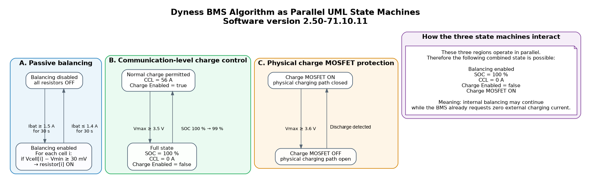
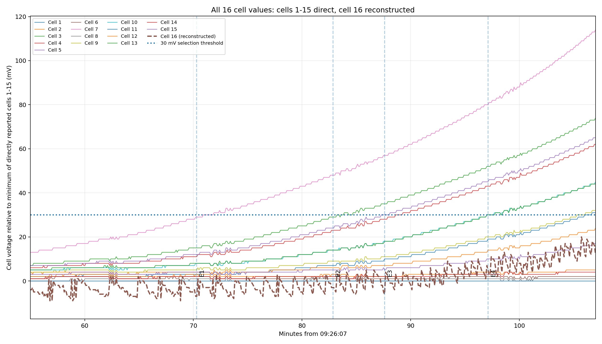
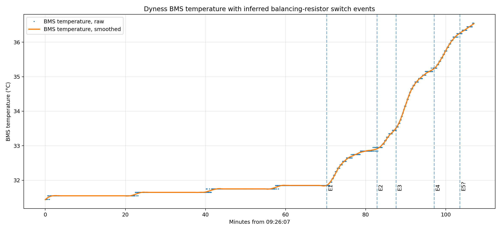
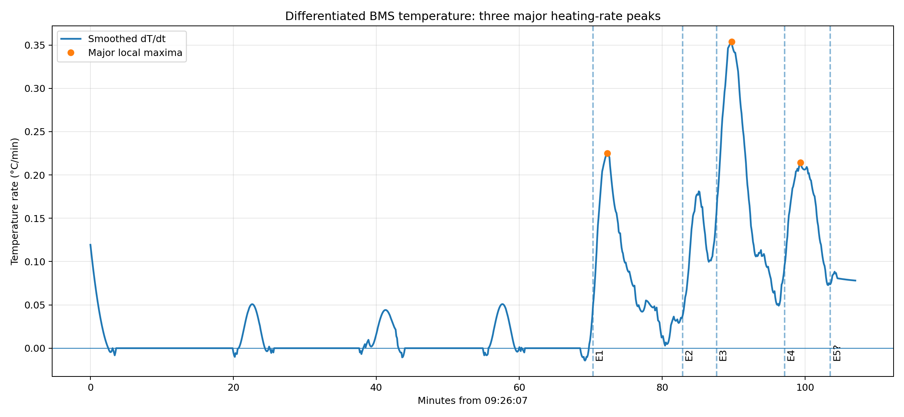

Abstract
A Dyness Powerbrick Pro 14.3 kWh battery with a 16-cell Dyness BMS running battery software version 2.50-71.10.11 was experimentally characterized using continuous telemetry of cell voltages, battery current, SOC, CCL, charge-permission state, raw status bytes and BMS temperature. Cells 1-15 are transmitted directly and cell 16 is reconstructed from pack voltage minus the sum of cells 1-15. The observations separate passive balancing, communication-level charge control and physical charge-MOSFET protection. Balancing is enabled at a battery charge current of 1.5 A and disabled at 1.4 A, with a 30 s qualification time retained as an engineering hypothesis. Individual balancing resistors are selected when a cell is 30 mV above the minimum cell. At 3.5 V maximum cell voltage the BMS enters full state, reports SOC 100 %, CCL 0 A and Charge Enabled false while the charge MOSFET remains on. Balancing continues in the 3.5-3.6 V region if its current and cell-delta criteria remain fulfilled. At 3.6 V the charge MOSFET opens; after the highest cell falls below 3.5 V the MOSFET closes again. CCL returns to 56 A when SOC changes from 100 % to 99 %.
Measured behaviour at a glance
| Function | Criterion | BMS result |
|---|---|---|
| Global balancer enable | Ibat ≥ 1.5 A for 30 s | Passive balancing enabled |
| Global balancer disable | Ibat ≤ 1.4 A for 30 s | Passive balancing disabled |
| Individual resistor selection | Vcell − Vmin ≥ 30 mV | Resistor for that cell ON |
| Full detection | Vmax ≥ 3.5 V | SOC 100 %, CCL 0 A, Charge Enabled false |
| Charge MOSFET cutoff | Vmax ≥ 3.6 V | Physical charging path opened |
| Charge MOSFET recovery | Vmax < 3.5 V | Physical charging path restored |
| Normal charge permission restored | SOC 100 % → 99 % | CCL 56 A, Charge Enabled true |
Concrete Dyness BMS questions and answers
At what battery current does Dyness BMS balancing start?
For the tested software version, passive balancing enables at 1.5 A battery charging current. The working control model requires the current to remain at or above 1.5 A for 30 seconds; the 30 s qualification is an engineering hypothesis derived from the measured transition behaviour.
At what current does balancing stop?
Balancing disables at 1.4 A or below, with the same 30-second qualification used in the working model.
What cell-voltage difference activates an individual balancing resistor?
The cell-selection rule is Vcell − Vmin ≥ 30 mV. The minimum cell, not the pack average, is the consistent reference in the observed switching events.
Does the pack have 15 or 16 cells in the telemetry analysis?
It is a 16-cell series pack. Cells 1-15 are transmitted directly. Cell 16 is reconstructed in the logger as V16 = Vpack − Σ(V1…V15) and is listed in the CSV. Because reconstruction adds quantization, direct cells 1-15 are preferred for millivolt-scale transition fitting, while cell 16 remains part of the complete 16-cell pack model.
What happens when the highest Dyness cell reaches 3.5 V?
The BMS enters its full state: SOC becomes 100 %, CCL becomes 0 A and Charge Enabled becomes false. The physical charge MOSFET remains on.
Can current still flow when CCL is 0 A and Charge Enabled is false?
Yes, physically it can, because the charge MOSFET remains on at the 3.5 V full threshold. An external charger must nevertheless obey CCL = 0 A during normal operation.
Does Dyness balancing continue after CCL becomes 0 A?
Yes. Passive balancing remains operational in the observed 3.5-3.6 V region when the actual current and cell-delta balancing criteria remain fulfilled.
When does the Dyness charge MOSFET open?
When the highest cell reaches 3.6 V, the BMS switches the charge MOSFET off and physically interrupts charging current.
When does the charge MOSFET switch on again?
After an overvoltage cutoff, the MOSFET is re-enabled when the highest cell falls below 3.5 V.
When does CCL return from 0 A to 56 A?
Communication-level charging permission returns when SOC falls from 100 % to 99 %. CCL then returns to 56 A and Charge Enabled becomes true.
Is there a transmitted flag showing passive balancing?
No explicit passive-balancing flag was identified in the decoded status bytes. The full/high-cell transition changes status3 from 0x80 to 0x88, but this is not a passive-balancing flag.
Should the 3.5-3.6 V region be used deliberately to extend balancing?
No. Although balancing continues and the physical MOSFET remains on below 3.6 V, the BMS already requests CCL = 0 A. Deliberately continuing external charging would ignore the BMS command and may create warranty implications.
UML state-machine model
The measured behaviour separates into three parallel control layers: passive balancing, communication-level charge control and physical charge-MOSFET protection.

Evidence figures



Raw measurement data
The underlying telemetry is published with the report so the switching thresholds can be checked independently.
Citation and reuse
Suggested citation: Gerdes, Heiko (2026). Dyness Powerbrick Pro 14.3 kWh BMS Balancing Algorithm and Charge-Control Behaviour - Experimental Characterization, Firmware 2.50-71.10.11. Version 1.0.0. DOI: 10.5281/zenodo.21860970.
This repository and report are licensed under CC BY 4.0.